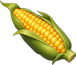

Monster Treat
Obtaining
- Bought from Ranch Master Tobin for 8 gold
- Bought from Trader Solveig for 12 gold
- Bought from Herder Arne for 12 gold
- Bought from Merchant Wilhelm for 12 gold
- Bought from Hunter Florian for 12 gold
- Bought from Merchant Isidro for 12 gold
- Made with Cooking level 5 at a Stove or Campfire
- Reward from the quest Eyes in the Cork Woods
- Reward from the quest The Folk of Elderglade
- Reward from the quest Nettle's Remedy
Creation
| Skill | Makes | Needs | Where | Tool |
|---|---|---|---|---|
| Cooking 5 | 2 | 1 ×  Corn, 1 × | Stove or Campfire |